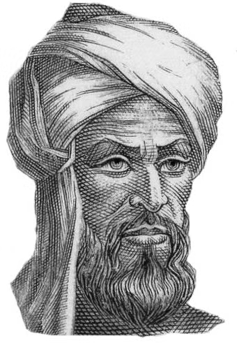

Présentation
Muhammad ibn Musa al-Khwarizmi était un mathématicien, astronome et géographe perse dont les travaux ont révolutionné les mathématiques.
| Nom complet | Muhammad ibn Musa al-Khwarizmi |
| Dates | Vers 780 - Vers 850 |
| Lieu de naissance | Khwarezm, Empire Perse |
| Domaines | Mathématiques, Astronomie, Géographie |
| Innovation principale | Algèbre et algorithmes |
🎯 Inventions Notables
- Algèbre - Systématisation des équations mathématiques
- Algorithmes - Procédures de calcul systématiques
- Chiffres arabes - Introduction du système décimal
- Trigonométrie - Tables sinus et cosinus
- Géographie - Cartographie améliorée
📚 Œuvres Majeures
📖 Kitab al-Jabr
L'ouvrage fondateur de l'algèbre moderne
🌍 Livre de la Géographie
Amélioration des coordonnées géographiques
🕰️ Tables Astronomiques
Calculs précis des mouvements célestes
🎓 Héritage
Le mot "algorithme" vient de son nom, et "algèbre" de son ouvrage "Al-Kitab al-Mukhtasar fi Hisab al-Jabr wal-Muqabala". Ses travaux ont influencé les mathématiques européennes pendant des siècles.